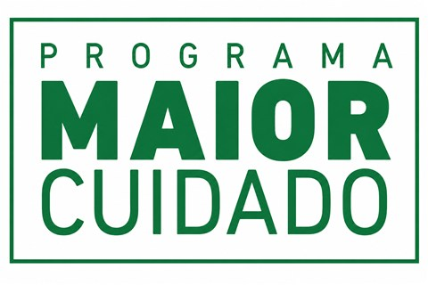
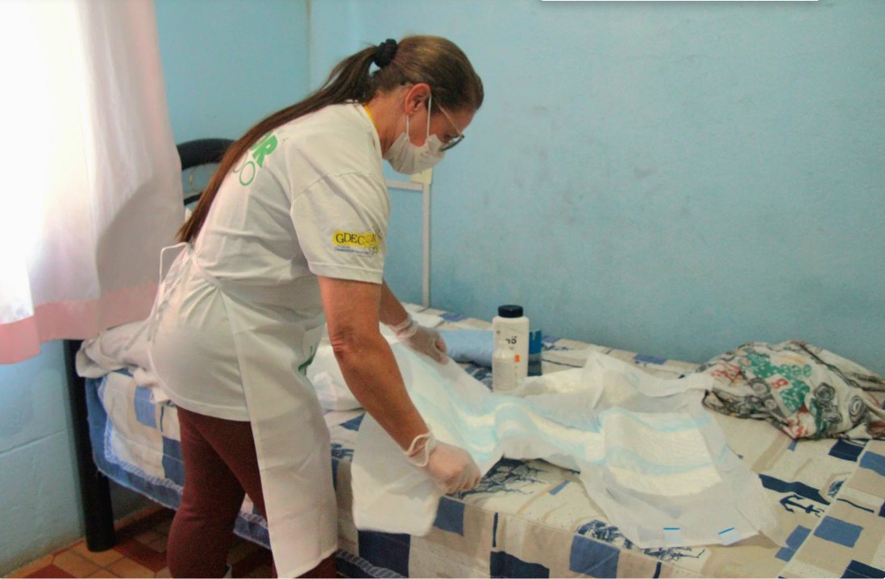
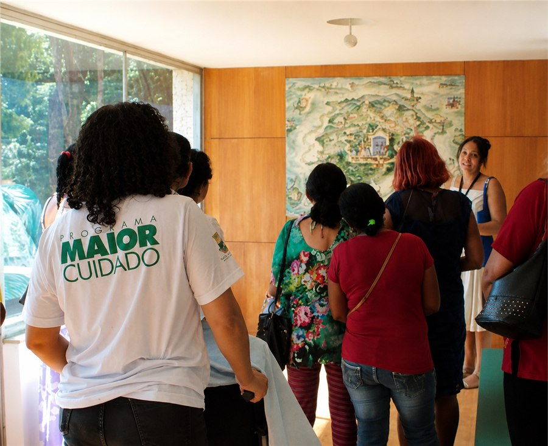
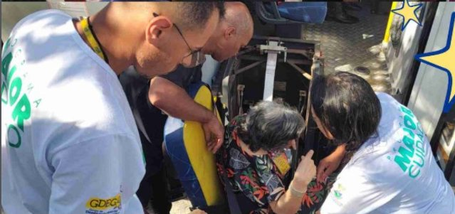

Maior Cuidado
Atendimento domiciliar a idosos dependentes e semidependentes, em parceria com a Prefeitura de Belo Horizonte, levando cuidado e qualidade de vida para dentro de casa.

O Programa Maior Cuidado é uma iniciativa pioneira desenvolvida em parceria com a Prefeitura de Belo Horizonte (por meio das Secretarias Municipais de Assistência Social, Segurança Alimentar e Cidadania, e de Saúde), executada pelo GDECOM. O objetivo principal é oferecer apoio e proteção social a idosos em situação de vulnerabilidade social e com dependência (ou semidependência) para a realização de atividades da vida diária. Com o trabalho conjunto entre a assistência social e a saúde, a iniciativa promove o envelhecimento digno e saudável no próprio ambiente familiar, prevenindo o asilamento e o isolamento social.
No programa, o GDECOM atua na gestão, no recrutamento, na capacitação e no acompanhamento de mais de 200 cuidadores sociais de idosos, atendendo centenas de famílias mensalmente em toda a rede de 37 CRAS (Centros de Referência da Assistência Social) de Belo Horizonte.
Atuação do GDECOM
Como Organização da Sociedade Civil (OSC) parceira na execução da política pública do SUAS-BH, o GDECOM é responsável por:
- Seleção e contratação: recrutar profissionais qualificados para atuar na ponta do serviço;
- Capacitação continuada: promover cursos de formação com carga horária mínima de 100 horas, preparando os cuidadores para os desafios físicos e emocionais do atendimento domiciliar;
- Supervisão técnica: acompanhar de perto a atuação dos cuidadores nas residências, para garantir a qualidade do serviço.
Pilares do atendimento
- Cuidado compartilhado: o cuidador social não substitui a família nem os profissionais de saúde — atua de forma complementar, dividindo a rotina de tarefas com o cuidador familiar principal e fortalecendo os laços familiares;
- Manutenção da autonomia: auxílio em atividades práticas do dia a dia — higiene pessoal, alimentação, mobilidade, administração de medicamentos e estímulo cognitivo — sempre respeitando os limites e a independência do idoso;
- Alívio da sobrecarga familiar: suporte emocional e físico para quem cuida (na maioria das vezes, mulheres da própria família), minimizando o esgotamento gerado pela jornada intensa de cuidados exclusivos;
- Prevenção do asilamento: qualidade de vida física e emocional ao idoso em sua própria casa, evitando a necessidade de acolhimento em instituições de longa permanência;
- Equipe multidisciplinar: o trabalho é orientado em conjunto com os CRAS e a rede de saúde de Belo Horizonte.
Um pouco do Maior Cuidado
Registros das atividades do programa. Clique em qualquer imagem para ampliar.



Quer saber mais sobre este projeto?
Fale com a nossa equipe e tire suas dúvidas sobre inscrição, turmas e parcerias.
Falar com o GDECOM Ver todos os projetos